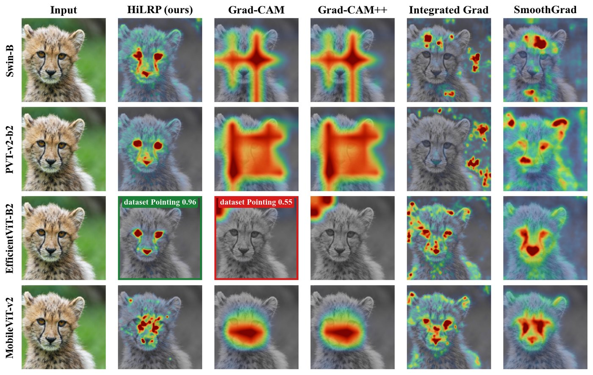
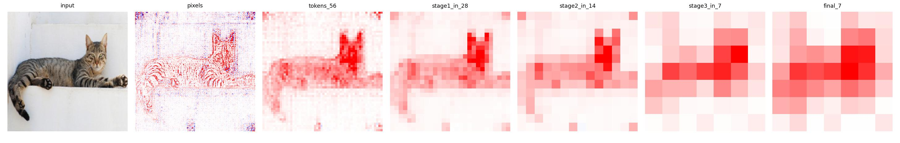
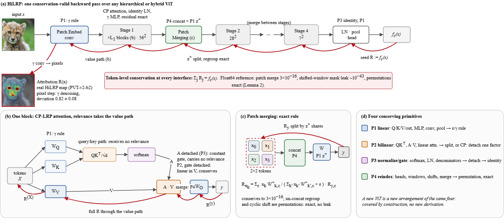
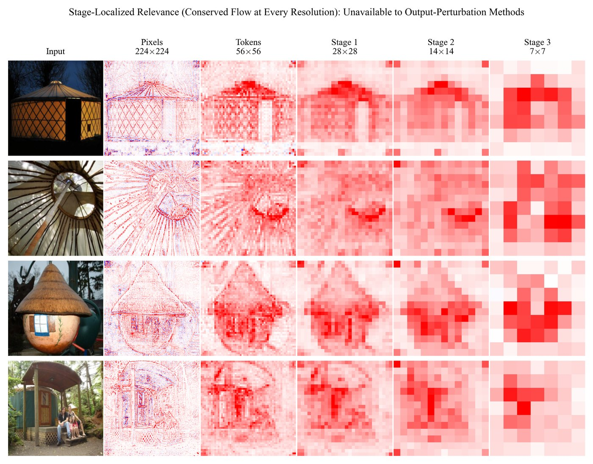
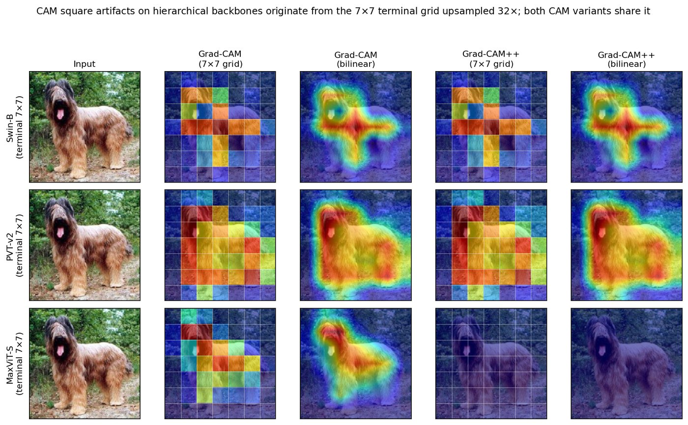
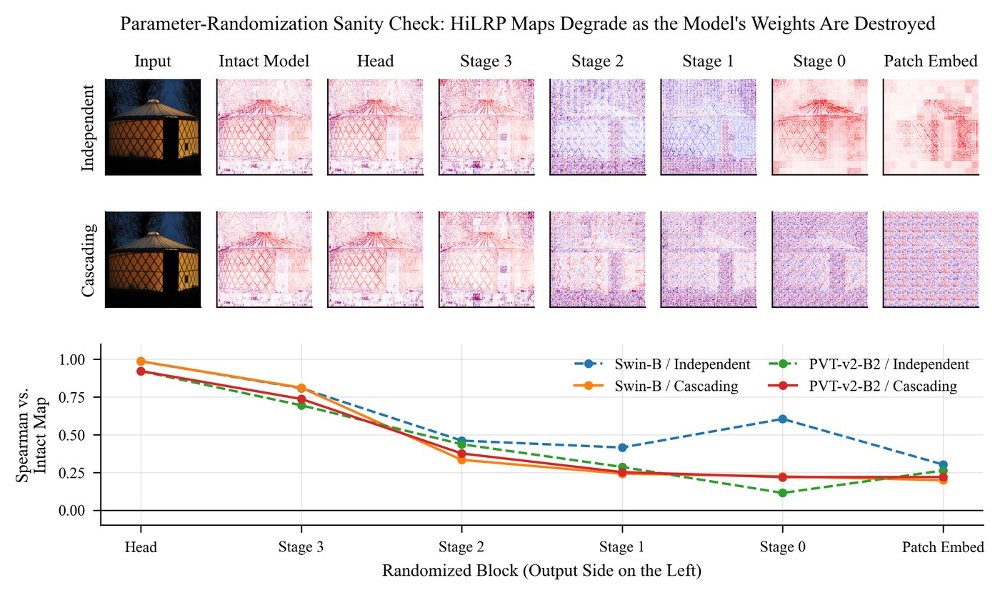
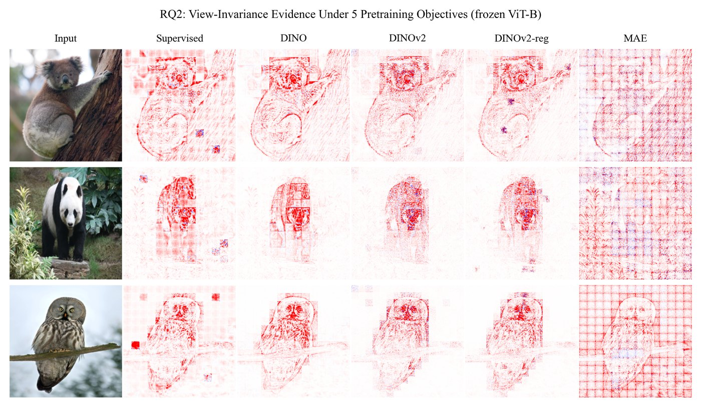
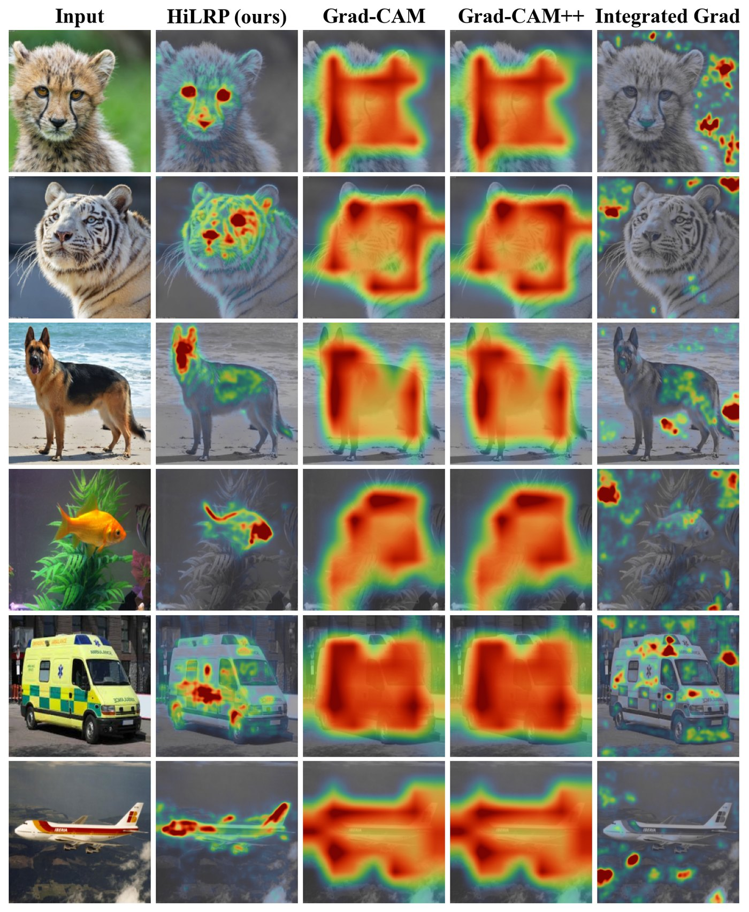
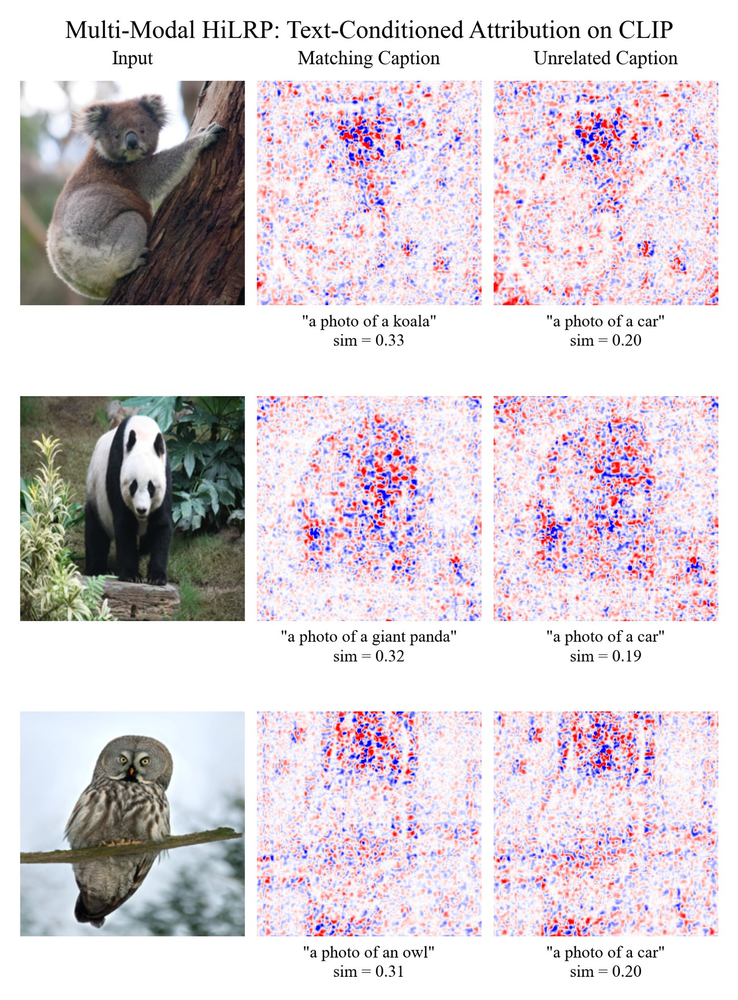

Overview
Vision Transformer design has fragmented. Each new backbone recombines convolutional stems, windowed, linear or multi-axis attention, patch merging and spatial reduction, and each recombination breaks an assumption that some attribution method relies on.
HiLRP starts from the observation that the attention and resolution-reduction operators of current ViTs compose four operation classes, and that each class admits one relevance rule that conserves. A backbone is then covered by construction instead of by a per-architecture derivation, and the same backward pass yields a signed relevance map at the input pixels and at every resolution stage.
One pass, every resolution
Relevance is tracked at every interface of the network, so the backward pass that explains the pixels also explains each stage. Fine stages show texture and parts; coarse stages show the object.

Method
Rather than derive a new rule for each architecture, HiLRP decomposes attention and resolution reduction into four primitives. Each has one conserving rule, so any arrangement of them is covered.
- P1Linear map. Q/K/V and output projections, MLPs, convolutions, pooling. Epsilon or gamma rule.
- P2Bilinear mix. QKᵀ, A·V, linear-attention products. Uniform split, or detach one factor as a gate.
- P3Normalize or gate. Softmax, LayerNorm, linear-attention denominators. Detach the denominator: identity rule.
- P4Reindex. Heads, windows, cyclic shifts, patch merging. A permutation, so it conserves exactly.

Results
Pointing Game on 1000 images per dataset, scored per image on the same images for both methods, with 95% bootstrap intervals and a paired McNemar test.
| Backbone | Dataset | HiLRP | Grad-CAM | Paired McNemar |
|---|---|---|---|---|
| EfficientViT-B2 | ImageNet-S | 0.936[0.921, 0.950] | 0.518[0.486, 0.549] | p = 2.1e-104 |
| PVT-v2-b2 | ImageNet-S | 0.958[0.945, 0.970] | 0.846[0.823, 0.868] | p = 1.3e-24 |
| EfficientViT-B2 | VOC 2007 | 0.820[0.795, 0.843] | 0.582[0.551, 0.612] | p = 3.3e-41 |
| PVT-v2-b2 | VOC 2007 | 0.865[0.844, 0.886] | 0.621[0.591, 0.650] | p = 5.7e-48 |
HiLRP is not best everywhere: Grad-CAM saturates the Pointing Game on Swin and MobileViT-v2. On EfficientViT, Grad-CAM stays low at every target layer we tried, so its failure there is not a layer artifact, though its cause is not established. The 14-method, 10-architecture benchmark and the provenance of every number are in RESULTS.md.
What the maps show






Use it
HiLRP is a pip package for Python 3.11.11 or newer. It works on unmodified timm models: Swin, PVT-v2, MaxViT, MobileViT-v2, EfficientViT, ViT and DeiT.
pip install "hilrp @ git+https://github.com/Nishan-Charlie/Hi-LRP-Towards-One-Trustworthy-Explainable-AI.git"import timm, hilrp
from PIL import Image
model = timm.create_model("swin_tiny_patch4_window7_224", pretrained=True).eval()
config = timm.data.resolve_data_config({}, model=model)
transform = timm.data.create_transform(**config)
x = transform(Image.open("cat.jpg").convert("RGB")).unsqueeze(0)
res = hilrp.attribute(model, x) # one backward pass
res["pixel_map"] # [224, 224] signed relevance
res["stage_maps"] # one map per resolution stage (Swin)The tutorial covers visualization, the conservation trace, other backbones, label-free models, and how to compare against other methods in the same process.
Limitations
- Conservation is proved for the rules and holds exactly on Swin and PVT-v2 when the weights are bias-free. On trained MaxViT, MobileViT-v2, EfficientViT and plain ViTs the relevance sum drifts with depth and is a measured quantity. No backbone conserves all the way to the pixels.
- The rules are installed as process-wide patches. Compute any other gradient-based method first, or in a separate process.
- CNNs are not supported. Cross-attention decoders and deformable attention are covered by the rules but not yet tested on trained weights.
Cite
@article{nishankar2026hilrp,
title={HiLRP: Toward One Trustworthy Explanation for Vision Transformer: Conservation-Valid Attribution via Attention Primitives},
author={Nishankar, Sathiyamohan and Sanjeewani, Pubudu and Perera, Asanka and Thuseethan, Selvarajah},
journal={arXiv preprint arXiv:2609.01282},
year={2026}
}